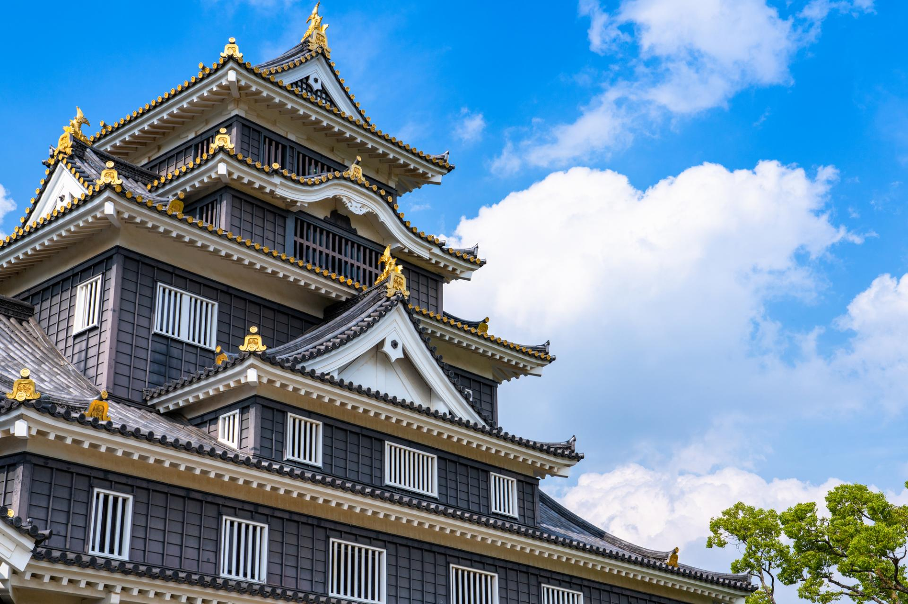
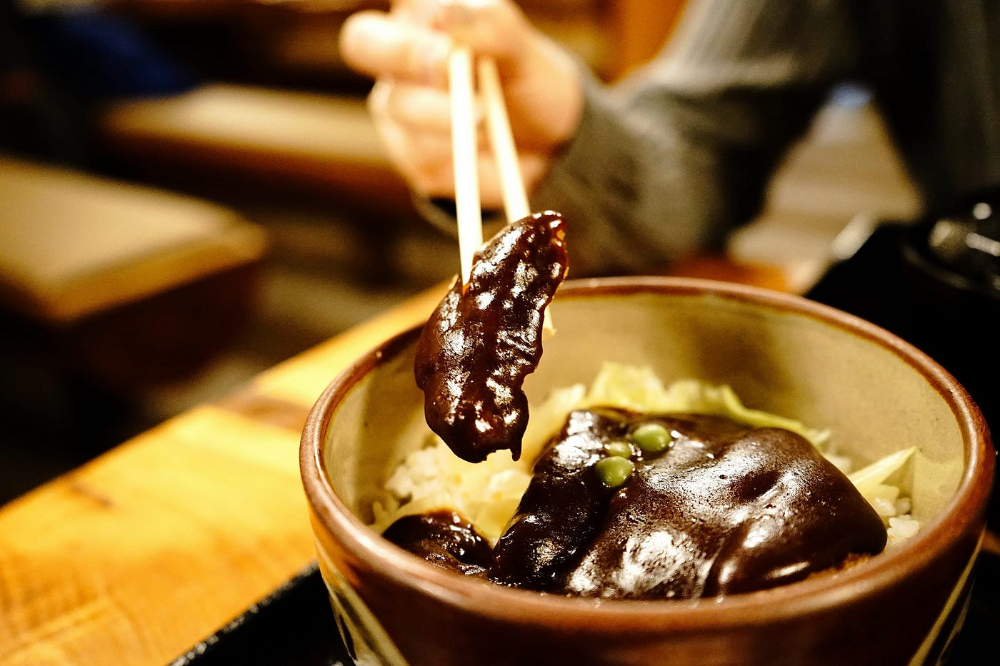
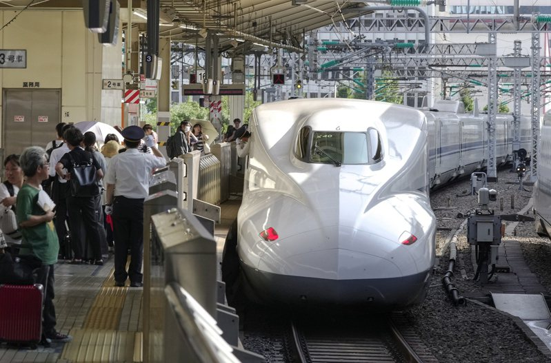
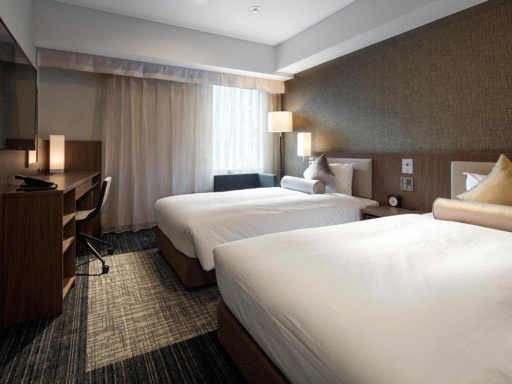
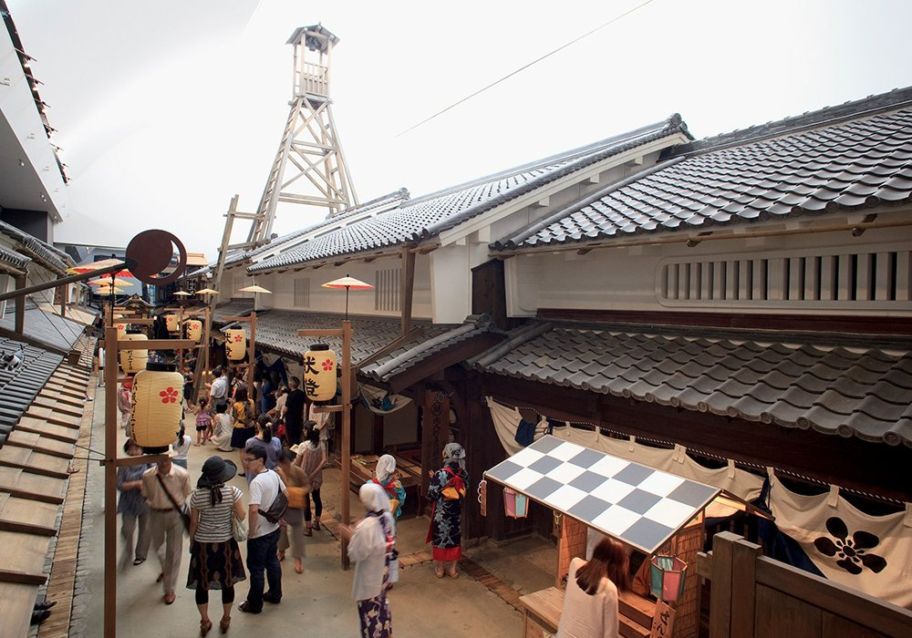
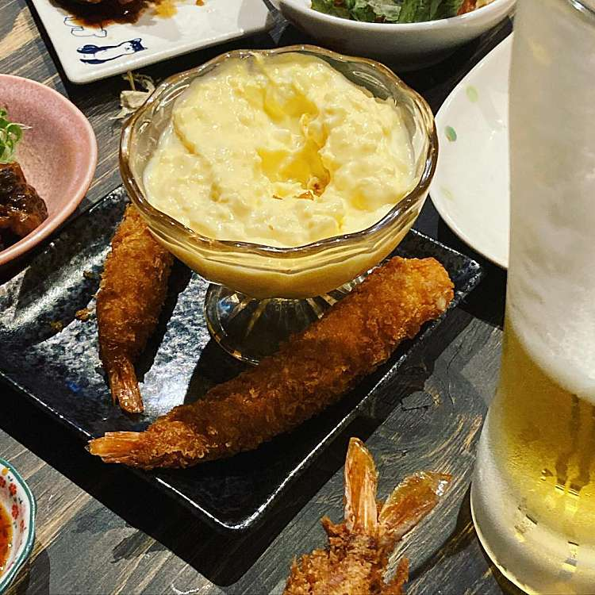
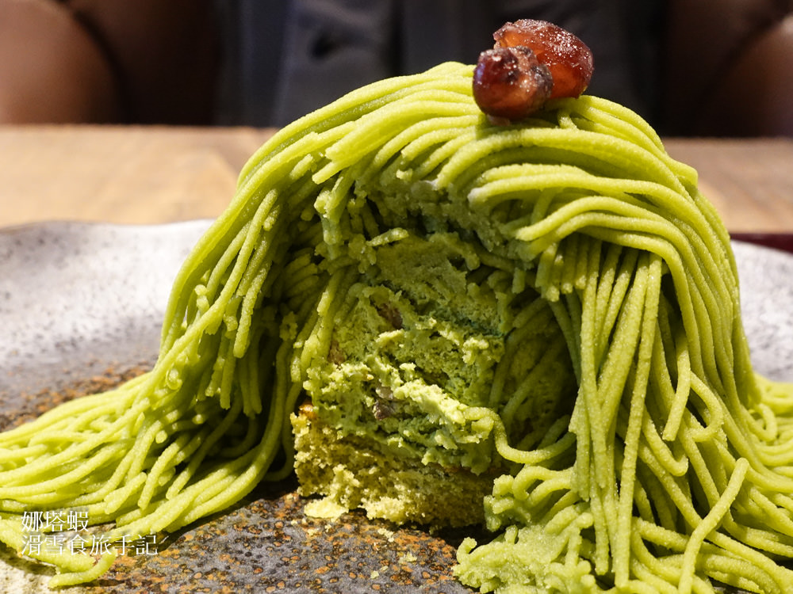
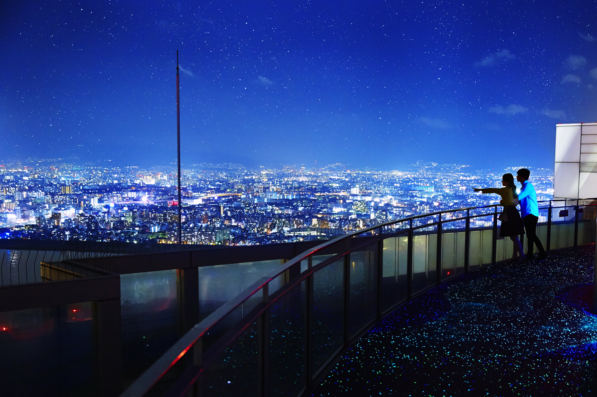

09：00 岡山城
預估停留：100分鐘免費的城主公主衣服。
今天開通大阪周遊卡。

11：00 味司野村
預估停留：45分鐘米其林指南、「多蜜豬排丼」的始祖店。
子膳會吃不完，點孫膳就好，可同時吃到多蜜豬排 & 滑蛋豬排。

12：40 新幹線
順便看能不能先取寢台列車的車票。
【東海道、山陽新幹線】：岡山－新大阪
搭車時間：12：40－13：28

14：00 大阪梅田優尼佐飯店
預估停留：20分鐘放行李，已付款，最晚退房時間12點。

14：30 大阪生活今昔館
預估停留：1小時使用大阪周遊卡進入。

15：40 居酒屋 壱円堂
預估停留：2.5小時很多1日幣的菜色、啤酒，吃完可以繼續逛逛天滿街

18：00 宇治園 心斎橋本店
預估停留：2小時道頓堀逛街，大國藥妝、AEON超市、章魚燒、文字燒、宇治園、蟹道樂

21：00 梅田藍天大廈空中庭園展望台
預估停留：80分鐘35樓通往39樓有透明自動扶梯、40樓有玻璃吧檯＋最新開幕的「星の遊歩道」